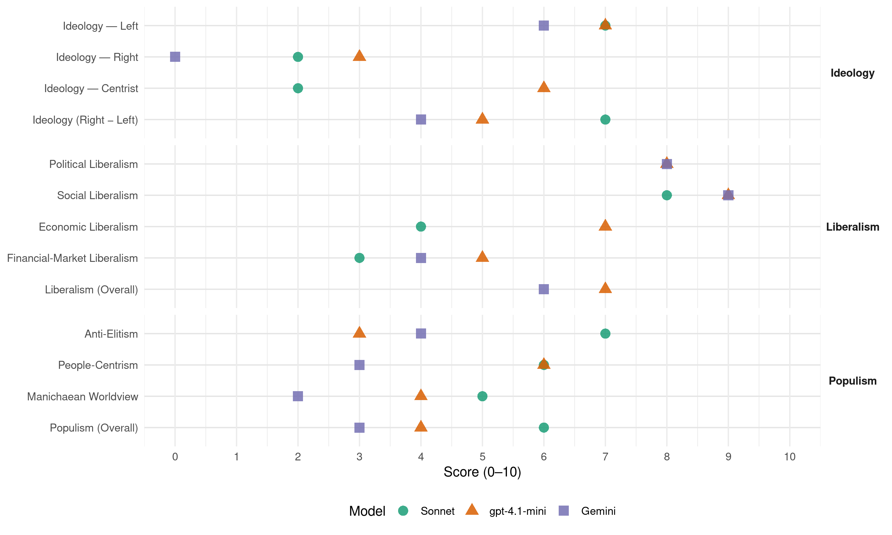

SPÖ (Austria, 2002)
manifesto_id 42320_200211
Get full text: This site shows derived annotations and short verbatim quotes only. The full manifesto text is © Manifesto Project / WZB — obtain it via manifesto-project.wzb.eu using the manifesto_id above.
Headline scores
| Dimension | Sonnet | gpt-4.1-mini | Gemini |
|---|---|---|---|
| Populism (Overall) | 6.0 | 4.0 | 3.0 |
| Anti-Elitism | 7.0 | 3.0 | 4.0 |
| People-Centrism | 6.0 | 6.0 | 3.0 |
| Manichaean Worldview | 5.0 | 4.0 | 2.0 |
| Ideology (Right − Left) | 7.0 | 5.0 | 4.0 |
| Liberalism (Overall) | – | 7.0 | 6.0 |
| Political Liberalism | – | 8.0 | 8.0 |
| Social Liberalism | 8.0 | 9.0 | 9.0 |
| Economic Liberalism | 4.0 | 7.0 | – |
| Financial-Market Liberalism | 3.0 | 5.0 | 4.0 |
Evidence per dimension
Economic Liberalism
Gemini · score 5.0 · mixed · chunk 1
“Wettbewerbsbehindernde Vorschriften unter anderem im Gewerberecht und im Berufsrecht der freien Berufe wollen wir durchforsten und abbauen”
Wir wollen den Wirtschaftsstandort Österreich durch aktive Wirtschaftspolitik stärken und daher auch die Bundeskompetenzen im Bereich der Außenwirtschaftspolitik bündeln und qualitativ ausbauen sowie die allgemeinen Wirtschaftsförderungsinstrumente als Impulsgeber für die Unternehmen evaluieren und zusammenführen. Wettbewerbsbehindernde Vorschriften unter anderem im Gewerberecht und im Berufsrecht der freien Berufe wollen wir durchforsten und abbauen.
gpt-4.1-mini · score 7.0 · verified · chunk 1
“Steuern für niedrige und mittlere Einkommensbezieher sowie für investierende Unternehmen senken”
…Wir wollen in der nächsten Legislaturperiode: die Lohn- und Einkommensteuer für kleine und mittlere Einkommen um rund 2 Milliarden Euro senken. (Einkommen bis 14.000 Euro im Jahr sollen steuerfrei werden, dies bedeutet eine Entlastung von bis zu 850 Euro im Jahr), die Besteuerung der Unfallrenten zurücknehmen, befristet auf ein Jahr einen Investitionsfreibetrag NEU für Unternehmen einführen, der am Wachstum der Investitionen orientiert ist und bis zu 30% der Investitionen betragen kann, Jung- und KleinunternehmerInnen einen verbesserten Zugang zu Risikokapital ermöglichen (Stabilitäts- und Risikokapitalfonds, steuerliche Anreize für venture capital), die Steuerfreiheit von Gewinnen aus Aktienoptionen streichen, die Beseitigung ungerechtfertigter Steuerprivilegien (z.B. bei Aktienoptionen und Spekulationsgewinnen), die Gleichstellung der effektiven Steuerlast von Gewinnen aus Privatstiftungen mit sonstigen Gewinnen, Anreize für Investitionen in Weiterbildung in Form von Prämien („Bildungssparen“) und einem Bonussystem für Unternehmen schaffen, ohne Erhöhung des Steuersatzes die Ergiebigkeit der Körperschaftssteuer erhöhen, uns auf europäischer Ebene für eine stärkere Harmonisierung z.B. der Kapitalbesteuerung und für Maßnahmen zur Eindämmung der Spekulation auf den internationalen Devisenmärkten (z.B. Tobin-Tax) einsetzen.
Sonnet · score 4.0 · verified · chunk 1
“Wettbewerbsbehindernde Vorschriften durchforsten und abbauen”
Wettbewerbsbehindernde Vorschriften unter anderem im Gewerberecht und im Berufsrecht der freien Berufe wollen wir durchforsten und abbauen.
Financial-Market Liberalism
Gemini · score 4.0 · verified · chunk 1
“Maßnahmen zur Eindämmung der Spekulation auf den internationalen Devisenmärkten”
uns auf europäischer Ebene für eine stärkere Harmonisierung z.B. der Kapitalbesteuerung und für Maßnahmen zur Eindämmung der Spekulation auf den internationalen Devisenmärkten (z.B. Tobin-Tax) einsetzen.
gpt-4.1-mini · score 5.0 · verified · chunk 1
“Wir wollen uns auf europäischer Ebene für eine stärkere Harmonisierung z.B. der Kapitalbesteuerung”
…die Gleichstellung der effektiven Steuerlast von Gewinnen aus Privatstiftungen mit sonstigen Gewinnen, Anreize für Investitionen in Weiterbildung in Form von Prämien („Bildungssparen“) und einem Bonussystem für Unternehmen schaffen, ohne Erhöhung des Steuersatzes die Ergiebigkeit der Körperschaftssteuer erhöhen, uns auf europäischer Ebene für eine stärkere Harmonisierung z.B. der Kapitalbesteuerung und für Maßnahmen zur Eindämmung der Spekulation auf den internationalen Devisenmärkten (z.B. Tobin-Tax) einsetzen.
Sonnet · score 3.0 · verified · chunk 1
“Maßnahmen zur Eindämmung der Spekulation auf den internationalen Devisenmärkten”
uns auf europäischer Ebene für eine stärkere Harmonisierung z.B. der Kapitalbesteuerung und für Maßnahmen zur Eindämmung der Spekulation auf den internationalen Devisenmärkten (z.B. Tobin-Tax) einsetzen.
Political Liberalism
Gemini · score 8.0 · verified · chunk 1
“umfassende Demokratie, sozialen Dialog, Sicherheit und politische Stabilität”
die umfassende Gleichstellung von Frauen und Männern zu erreichen sowie Frauenpolitik als integralen Bestandteil aller Politikbereiche zu etablieren, und für umfassende Demokratie, sozialen Dialog, Sicherheit und politische Stabilität in Österreich zu sorgen.
gpt-4.1-mini · score 8.0 · verified · chunk 1
“Wir wollen eine Initiative „Medien- und Informationsfreiheit“ verwirklichen”
…Wir wollen eine Initiative „Medien- und Informationsfreiheit“ verwirklichen, die die Freiheit der JournalistInnen verfassungsrechtlich schützt, die Meinungsfreiheit zu einer allgemeinen Informationsfreiheit ausbaut und eine Reform der Presseförderung vorsieht. Es darf nie wieder zu Eingriffen in die Medien- und Informationsfreiheit in Österreich kommen.
Liberalism (Overall)
Gemini · score 6.0 · verified · chunk 1
“umfassende Demokratie, sozialen Dialog, Sicherheit und politische Stabilität”
die umfassende Gleichstellung von Frauen und Männern zu erreichen sowie Frauenpolitik als integralen Bestandteil aller Politikbereiche zu etablieren, und für umfassende Demokratie, sozialen Dialog, Sicherheit und politische Stabilität in Österreich zu sorgen.
gpt-4.1-mini · score 7.0 · verified · chunk 1
“Wir wollen eine Initiative „Medien- und Informationsfreiheit“ verwirklichen”
…Wir wollen eine Initiative „Medien- und Informationsfreiheit“ verwirklichen, die die Freiheit der JournalistInnen verfassungsrechtlich schützt, die Meinungsfreiheit zu einer allgemeinen Informationsfreiheit ausbaut und eine Reform der Presseförderung vorsieht. Es darf nie wieder zu Eingriffen in die Medien- und Informationsfreiheit in Österreich kommen.
Anti-Elitism
Gemini · score 4.0 · verified · chunk 1
“unverfrorene parteipolitische Einflussnahmen, blau-schwarzen Postenschacher”
Es gab in diesen zweieinhalb Jahren unverfrorene parteipolitische Einflussnahmen, blau-schwarzen Postenschacher in nie da gewesenem Ausmaß.
gpt-4.1-mini · score 3.0 · verified · chunk 1
“Machtgier und mangelnde demokratische Kultur”
…politisch Missliebige in bisher ungekannter Weise von ihren Positionen entfernt, wichtige Institutionen des Landes - wie der Verfassungsgerichtshof verunglimpft, das Ausland oft in vollkommen unqualifizierter Weise attackiert. Projekt 24: Demokratie und Öffentlichkeit entwickeln Wir wollen hingegen die Instrumente unserer Demokratie weiterentwickeln und unter anderem das aktive Wahlalter generell auf 16 Jahre senken, die Mitbestimmungsrechte älterer Menschen ausbauen, ein „gläsernes Parlament“ mit mehr Transparenz und stärkeren Minderheitsrechten schaffen und die Distanz zwischen BürgerInnen und gewählten MandatarInnen verringern. Wir wollen eine vielfältige und kritische Öffentlichkeit entwickeln helfen, weil wir meinen, dass sich nur unter dieser Voraussetzung derartige politische Verhältnisse, wie wir sie jetzt erleben, nicht mehr wiederholen können. Wir wollen eine Kultur des Zusammenlebens und der Öffentlichkeit entwickeln, in der Räume und Foren geschaffen werden, in denen reflektiert, diskutiert, engagiert Stellung genommen wird – nicht nur zum politischen Geschehen, sondern zum Zustand und zur Zukunft unserer Gesellschaft insgesamt. Die Medien sind dabei ein zentrales Element. Wir wollen eine Initiative „Medien- und Informationsfreiheit“ verwirklichen, die die Freiheit der JournalistInnen verfassungsrechtlich schützt, die Meinungsfreiheit zu einer allgemeinen Informationsfreiheit ausbaut und eine Reform der Presseförderung vorsieht. Es darf nie wieder zu Eingriffen in die Medien- und Informationsfreiheit in Österreich kommen. Projekt 25: Kultur und Kunst Kulturelle Fragen sind für den Zusammenhalt einer Gesellschaft lebensnotwendig. In Österreich mit seinem Reichtum an kultureller Tradition und Vielfalt gilt das ganz besonders. In dieser Vielfalt liegt die Stärke und die Innovationsfähigkeit unserer Gesellschaft. Sozialdemokratische Kulturpolitik soll allen Menschen ermöglichen, ihr kreatives Potenzial zu entwickeln, zur Geltung zu bringen und an der kulturellen Öffentlichkeit teilzunehmen. Unser Ziel ist nach zweieinhalb Jahren rückwärtsgewandter Politik die Wiederherstellung eines offenen kulturellen Klimas, das die aktive Mitwirkung an der Gestaltung gesellschaftlicher Entwicklungen fördert. Die Kunst ist ein besonderer Bereich der Kultur in dem sich die Gesellschaft darstellt, hinterfragt und reflektiert; als dynamisches Element braucht sie Freiräume, um sich entfalten zu können. Neben der Absicherung der Initiativen und Institutionen, in denen die künstlerische Auseinandersetzung stattfindet, brauchen auch die Künstlerinnen und Künstler selbst adäquate Arbeitsbedingungen und soziale Sicherheit. Da überdurchschnittlich viele Künstlerinnen und Künstler sogenannte atypisch Beschäftigte sind, wollen wir auch ihnen die leistbare Einbeziehung in die Sozialversicherung ermöglichen, wobei die besonderen Produktionsbedingungen im künstlerischen Bereich berücksichtigt werden müssen. Die Verbesserung der sozialen Lage der Künstlerinnen und Künstler ist ein vordringliches Ziel. Neben Maßnahmen im Bereich der sozialen Absicherung sind Aktivitäten im steuerlichen Bereich erforderlich, wie beispielsweise die Erweiterung des begünstigten Steuersatzes (Halbsteuersatz) auf hauptberuflich tätige Kunstschaffende für außerordentliche Einkünfte. Wir wollen Verbesserungen des Urheberrechts vornehmen, die den Interessen der überwiegenden Mehrzahl der Künstlerinnen und Künstler entsprechen und den öffentlichen Zugang zu Wissen und kulturellen Gütern nicht beschneiden, sowie ein Urhebervertragsrecht schaffen, das ihnen wirksamen Schutz vor benachteiligenden Praktiken bietet. Besonderes Augenmerk wird der zeitgenössischen Kunst in all ihren Ausdrucksformen zukommen. Neben einer Medienkultur- Offensive soll der Aspekt kultureller Bildung hervorgehoben werden; es soll in Kooperation mit Schulen, dem ORF und geeigneten Vermittlungseinrichtungen neue Initiativen geben, um sowohl den aktiven als auch den passiven Zugang zur zeitgenössischen Kunst zu fördern. Schließlich besteht auch Österreichs kulturelles Erbe aus vielem, was zur Zeit seiner Entstehung sehr modern und höchst umstritten war. Wir wollen ein Maßnahmenpaket für den österreichischen Film umsetzen, das eine verstärkte Förderung des eigenproduzierten Films zum Ziel hat und von Bund, Ländern und ORF getragen wird. Unter der Vorraussetzung geeigneter Zweckbindungen, um Impulse für österreichische Produktionen zu setzen, ist beabsichtigt, die Gebührenbefreiungsrefundierung wiederherstellen und die Werbebeschränkungen für den ORF aufzuheben. Weitere Schritte sind die Schaffung eines Beteiligungsfonds im Bereich der Filmwirtschaft sowie steuerliche Anreize für Investitionen in Filmproduktionen. Für die Verlags- und Musikwirtschaft sind unterstützende Maßnahmen für den Bereich der Distribution geplant. Wir wollen eine umfassende Reform der Kulturverwaltung durchführen. Zur Umsetzung dieser Anliegen sollen die auf mehrere Ressorts verteilten Agenden in ein Ministerium zusammengeführt und die überholte Spartentrennung überwunden werden. Wir treten für eine langfristigere Planung von Förderungen sowie transparentere und demokratischere Entscheidungsprozesse nach europäischem Vorbild ein. Die europäische Perspektive, die von der Regierung Schüssel vernachlässigt wurde, soll künftig eine wichtige Rolle spielen, indem unter anderem die Teilnahme an europäischen Programmen stärker unterstützt wird. Zu einer entwickelten demokratischen Kultur zählt auch die Toleranz gegenüber dem Anderen. Rassismus und allen anderen Formen gesellschaftlicher Ausgrenzung im zivilrechtlichen Bereich, am Arbeitsplatz, im Alltag oder in Medien wollen wir durch ein Antidiskriminierungsgesetz begegnen. Wir wollen den Dialog mit und zwischen den verschiedenen Volksgruppen in Österreich fördern und ihr Recht auf Beteiligung an der demokratischen Willensbildung gewährleisten. Projekt 26: Benachteiligungen für Menschen mit Behinderungen nachhaltig beseitigen Menschen werden in Österreich aufgrund ihrer Behinderung noch immer in vielen Lebensbereichen benachteiligt. Wir wollen daher ein Behindertengleichstellungsgesetz schaffen, um diese Benachteiligungen zu beseitigen. Wir wollen erreichen, dass der Zugang zu Dienstleistungen (Arztpraxen, Geschäfte …) für behinderte Menschen ermöglicht wird, öffentliche Verkehrsmittel ohne Schwierigkeiten benutzt werden können, das gesamte Bildungssystem für Menschen mit Behinderungen zugänglich ist, der Zugang zum Arbeitsmarkt und die Karrierechancen für Menschen mit Behinderungen verbessert werden, im Gesundheitssystem die Bedürfnisse der Behinderten (z.B. bei den Kosten für spezifische Heilbehelfe) stärker berücksichtigt werden, der Zugang zu mobiler Betreuung, kurzfristiger stationärer Behandlung sowie zur medizinischen Rehabilitation gewährleistet wird, die Gebärdensprache als offizielle Sprache anerkannt wird, insgesamt die rechtlichen Möglichkeiten zur Bekämpfung von Benachteiligungen verbessert werden. Wir wenden uns gegen die Diskriminierung von Zivildienern, die wertvolle Arbeit für die Gesellschaft leisten. Wir wollen ihnen daher ein Verpflegungsgeld in gleicher Höhe wie den Wehrdienern zahlen, ihre Beschäftigung bei Einrichtungen der Alten- und Behindertenpflege fördern, den Gedenkdienst im Ausland unterstützen sowie für eine bundesweite Vertretung der Zivildiener sorgen. Wir setzen uns für die rechtliche Absicherung gleichgeschlechtlicher Partnerschaften ein und fordern die Gleichstellung bei nicht-ehelichen Lebensgemeinschaften sowie eine standesamtlich „Eingetragene Partnerschaft“. Darüber hinaus treten wir auch für die Beseitigung aller anderen Diskriminierungen (z.B. im Opferfürsorgegesetz) ein. In einer Demokratie sollte es selbstverständlich sein, dass zwischen den demokratisch gewählten Parteien ein zivilisierter Wettstreit darüber geführt wird, welche politischen Konzepte die besseren sind und welche umgesetzt werden sollen. Auf dieser Ebene führen wir den Dialog und die parlamentarische Auseinandersetzung mit allen Parlamentsparteien. Wenn eine Partei wie die FPÖ aber sich nicht klar von nationalistischen, extremen und autoritären Elementen abgrenzt und distanziert fremdenfeindliche oder antisemitische Ressentiments schürt, selbst als Regierungspartei das politische System Österreichs diskreditiert, sowie über keinerlei Stabilität, Berechenbarkeit und Verlässlichkeit verfügt, dann ist sie kein möglicher Koalitionspartner der SPÖ. Mit diesem Programm treten wir vor die Wählerinnen und Wähler, die am 24. November 2002 eine Richtungsentscheidung für Österreich treffen werden. Wir stehen für den entschlossenen Kampf gegen die Arbeitslosigkeit, eine aktive Wirtschaftspolitik, die es den arbeitenden Menschen und den Unternehmen ermöglicht, auch in schwierigen Zeiten ihre Leistung zu entfalten, einen verantwortungsvollen und sparsamen Umgang mit dem Geld der SteuerzahlerInnen, ein leistungsfähiges Gesundheitssystems, das allen bestmögliche Versorgung garantiert, hochwertige Bildung, die allen Menschen Chancen eröffnet, gesicherte Pensionen für alle Menschen, Reformen, die im sozialen Dialog entwickelt und umgesetzt werden, und ein demokratisches und weltoffenes Österreich ohne Diskriminierungen.
Sonnet · score 7.0 · verified · chunk 1
“Machtgier und mangelnde demokratische Kultur”
Das alles legt offen, wodurch die Regierung Schüssel tatsächlich hervorsticht: Machtgier und mangelnde demokratische Kultur. Schüssel hat die bewährte österreichische Kultur des miteinander Redens verlassen
Ideology — Centrist
gpt-4.1-mini · score 6.0 · verified · chunk 1
“Die SPÖ ist bereit für diesen Neuanfang”
…Wir aber meinen, es ist Zeit für einen Neuanfang in Österreich. In den vergangenen zweieinhalb Jahren wurde bereits genug zerstört. Die SPÖ ist bereit für diesen Neuanfang. Denn die SPÖ hat aus Fehlern der Vergangenheit gelernt. Wolfgang Schüssel nicht. Wir sind in der letzten Phase der großen Koalition mit der ÖVP in eine Politik des weitgehenden Stillstands geraten – nicht zuletzt wegen der vielen großen Gegensätze in unseren Programmen. Und wir wissen nun, dass damit auch dem Rechtspopulismus Haiders in die Hände gespielt wurde. Österreich braucht einen sicheren Weg in die Zukunft. Deshalb formulieren wir neue Ziele für Österreich, die den Menschen in unserem Land Sicherheit und Wohlstand bringen sollen.
Sonnet · score 2.0 · verified · chunk 1
“faire Chancen für alle garantiert”
Unsere Zielsetzung ist eine Gesellschaft, die faire Chancen für alle garantiert, deshalb ist der Sozialstaat für uns unverzichtbar.
Ideology — Left
Gemini · score 6.0 · verified · chunk 1
“die Lohn- und Einkommensteuer für kleine und mittlere Einkommen”
Um die aus unserer Sicht vordringlichen Ziele zu erreichen, nämlich die Massenkaufkraft zu stärken und Arbeitsplätze zu schaffen, Steuergerechtigkeit herzustellen, die Investitionen in die Realwirtschaft zu fördern, auf Dauer einen ausgeglichenen Haushalt zu erreichen, wollen wir in der nächsten Legislaturperiode: die Lohn- und Einkommensteuer für kleine und mittlere Einkommen um rund 2 Milliarden Euro senken.
gpt-4.1-mini · score 7.0 · verified · chunk 1
“Steuern für niedrige und mittlere Einkommensbezieher sowie für investierende Unternehmen senken”
…Wir wollen in der nächsten Legislaturperiode: die Lohn- und Einkommensteuer für kleine und mittlere Einkommen um rund 2 Milliarden Euro senken. (Einkommen bis 14.000 Euro im Jahr sollen steuerfrei werden, dies bedeutet eine Entlastung von bis zu 850 Euro im Jahr), die Besteuerung der Unfallrenten zurücknehmen, befristet auf ein Jahr einen Investitionsfreibetrag NEU für Unternehmen einführen, der am Wachstum der Investitionen orientiert ist und bis zu 30% der Investitionen betragen kann, Jung- und KleinunternehmerInnen einen verbesserten Zugang zu Risikokapital ermöglichen (Stabilitäts- und Risikokapitalfonds, steuerliche Anreize für venture capital), die Steuerfreiheit von Gewinnen aus Aktienoptionen streichen, die Beseitigung ungerechtfertigter Steuerprivilegien (z.B. bei Aktienoptionen und Spekulationsgewinnen), die Gleichstellung der effektiven Steuerlast von Gewinnen aus Privatstiftungen mit sonstigen Gewinnen, Anreize für Investitionen in Weiterbildung in Form von Prämien („Bildungssparen“) und einem Bonussystem für Unternehmen schaffen, ohne Erhöhung des Steuersatzes die Ergiebigkeit der Körperschaftssteuer erhöhen, uns auf europäischer Ebene für eine stärkere Harmonisierung z.B. der Kapitalbesteuerung und für Maßnahmen zur Eindämmung der Spekulation auf den internationalen Devisenmärkten (z.B. Tobin-Tax) einsetzen.
Sonnet · score 7.0 · verified · chunk 1
“Steuern für niedrige und mittlere Einkommensbezieher senken”
Projekt 1: Steuern für niedrige und mittlere Einkommensbezieher sowie für investierende Unternehmen senken. Die Regierung Schüssel hat die Steuern um 8 Milliarden Euro erhöht.
Ideology (Right − Left)
Gemini · score 4.0 · verified · chunk 1
“die Lohn- und Einkommensteuer für kleine und mittlere Einkommen”
Um die aus unserer Sicht vordringlichen Ziele zu erreichen, nämlich die Massenkaufkraft zu stärken und Arbeitsplätze zu schaffen, Steuergerechtigkeit herzustellen, die Investitionen in die Realwirtschaft zu fördern, auf Dauer einen ausgeglichenen Haushalt zu erreichen, wollen wir in der nächsten Legislaturperiode: die Lohn- und Einkommensteuer für kleine und mittlere Einkommen um rund 2 Milliarden Euro senken.
gpt-4.1-mini · score 5.0 · verified · chunk 1
“Chaosregierung Schüssel”
…Zahllose Rücktritte von Ministern, viele Skandale und Pannen und zuletzt die Turbulenzen in der FPÖ und die Selbstauflösung der Bundesregierung sprechen eine deutliche Sprache. Letztlich musste die Chaosregierung Schüssel vorzeitig aufgeben und am 20. September 2002 in die vorzeitige Beendigung der Gesetzgebungsperiode flüchten. So kann man Österreich nicht in eine Zukunft führen, die den Menschen Perspektiven gibt. Dennoch will Wolfgang Schüssel dieses blau-schwarze Experiment verlängern, wenn es das Wahlergebnis vom 24. November zulässt.
Sonnet · score 7.0 · verified · chunk 1
“Steuern für niedrige und mittlere Einkommensbezieher senken”
Projekt 1: Steuern für niedrige und mittlere Einkommensbezieher sowie für investierende Unternehmen senken. Die Regierung Schüssel hat die Steuern um 8 Milliarden Euro erhöht.
Ideology — Right
Gemini · score 0.0 · verified · chunk 1
“fremdenfeindliche oder antisemitische Ressentiments schürt”
Wenn eine Partei wie die FPÖ aber sich nicht klar von nationalistischen, extremen und autoritären Elementen abgrenzt und distanziert fremdenfeindliche oder antisemitische Ressentiments schürt, selbst als Regierungspartei das politische System Österreichs diskreditiert, sowie über keinerlei Stabilität, Berechenbarkeit und Verlässlichkeit verfügt, dann ist sie kein möglicher Koalitionspartner der SPÖ.
gpt-4.1-mini · score 3.0 · verified · chunk 1
“Wenn eine Partei wie die FPÖ aber sich nicht klar von nationalistischen, extremen und autoritären Elementen abgrenzt”
…In einer Demokratie sollte es selbstverständlich sein, dass zwischen den demokratisch gewählten Parteien ein zivilisierter Wettstreit darüber geführt wird, welche politischen Konzepte die besseren sind und welche umgesetzt werden sollen. Auf dieser Ebene führen wir den Dialog und die parlamentarische Auseinandersetzung mit allen Parlamentsparteien. Wenn eine Partei wie die FPÖ aber sich nicht klar von nationalistischen, extremen und autoritären Elementen abgrenzt und distanziert fremdenfeindliche oder antisemitische Ressentiments schürt, selbst als Regierungspartei das politische System Österreichs diskreditiert, sowie über keinerlei Stabilität, Berechenbarkeit und Verlässlichkeit verfügt, dann ist sie kein möglicher Koalitionspartner der SPÖ.
Sonnet · score 2.0 · verified · chunk 1
“soviel Zuwanderung wie nötig, soviel Integration wie möglich”
Projekt 19: Soviel Zuwanderung wie nötig, soviel Integration wie möglich. Wir halten es für sinnvoll, dass jährlich eine Bedarfseinschätzung hinsichtlich Zahl und Qualifikation möglicher ZuwanderInnen erstellt wird.
Manichaean Worldview
Gemini · score 2.0 · verified · chunk 1
“Machtgier und mangelnde demokratische Kultur”
Das alles legt offen, wodurch die Regierung Schüssel tatsächlich hervorsticht: Machtgier und mangelnde demokratische Kultur. Schüssel hat die bewährte österreichische
gpt-4.1-mini · score 4.0 · verified · chunk 1
“Chaosregierung Schüssel”
…Zahllose Rücktritte von Ministern, viele Skandale und Pannen und zuletzt die Turbulenzen in der FPÖ und die Selbstauflösung der Bundesregierung sprechen eine deutliche Sprache. Letztlich musste die Chaosregierung Schüssel vorzeitig aufgeben und am 20. September 2002 in die vorzeitige Beendigung der Gesetzgebungsperiode flüchten. So kann man Österreich nicht in eine Zukunft führen, die den Menschen Perspektiven gibt. Dennoch will Wolfgang Schüssel dieses blau-schwarze Experiment verlängern, wenn es das Wahlergebnis vom 24. November zulässt.
Sonnet · score 5.0 · verified · chunk 1
“brutal über die Menschen hinweg regiert”
Schüssel hat die bewährte österreichische Kultur des miteinander Redens verlassen und hat stattdessen brutal über die Menschen hinweg regiert. Betroffene Menschen und ihre Interessensvertretungen in politische Entscheidungen mit einzubeziehen, das will Blau-Schwarz nicht.
People-Centrism
Gemini · score 3.0 · verified · chunk 1
“In erster Linie aber sind wir den Menschen verpflichtet”
Unter solchen Rahmenbedingungen wird die Budgetpolitik der kommenden Jahre sehr schwierig werden. In erster Linie aber sind wir den Menschen verpflichtet. Daher wollen wir die ungerechtesten Belastungen
gpt-4.1-mini · score 6.0 · verified · chunk 1
“Die SPÖ ist bereit für diesen Neuanfang”
…Wir aber meinen, es ist Zeit für einen Neuanfang in Österreich. In den vergangenen zweieinhalb Jahren wurde bereits genug zerstört. Die SPÖ ist bereit für diesen Neuanfang. Denn die SPÖ hat aus Fehlern der Vergangenheit gelernt. Wolfgang Schüssel nicht. Wir sind in der letzten Phase der großen Koalition mit der ÖVP in eine Politik des weitgehenden Stillstands geraten – nicht zuletzt wegen der vielen großen Gegensätze in unseren Programmen. Und wir wissen nun, dass damit auch dem Rechtspopulismus Haiders in die Hände gespielt wurde. Österreich braucht einen sicheren Weg in die Zukunft. Deshalb formulieren wir neue Ziele für Österreich, die den Menschen in unserem Land Sicherheit und Wohlstand bringen sollen. Es gibt vieles, das wir uns in und für Österreich wünschen. Und wir werden vieles davon umsetzen, wenn wir den Auftrag dazu bekommen.
Sonnet · score 6.0 · verified · chunk 1
“In erster Linie aber sind wir den Menschen verpflichtet”
Wir wollen im Gegensatz zur Regierung Schüssel den Weg einer sozial verträglichen Budgetkonsolidierung gehen. In erster Linie aber sind wir den Menschen verpflichtet. Daher wollen wir die ungerechtesten Belastungen rückgängig machen
Populism (Overall)
Gemini · score 3.0 · verified · chunk 1
“Machtgier und mangelnde demokratische Kultur”
Das alles legt offen, wodurch die Regierung Schüssel tatsächlich hervorsticht: Machtgier und mangelnde demokratische Kultur. Schüssel hat die bewährte österreichische
gpt-4.1-mini · score 4.0 · verified · chunk 1
“Chaosregierung Schüssel”
…Zahllose Rücktritte von Ministern, viele Skandale und Pannen und zuletzt die Turbulenzen in der FPÖ und die Selbstauflösung der Bundesregierung sprechen eine deutliche Sprache. Letztlich musste die Chaosregierung Schüssel vorzeitig aufgeben und am 20. September 2002 in die vorzeitige Beendigung der Gesetzgebungsperiode flüchten. So kann man Österreich nicht in eine Zukunft führen, die den Menschen Perspektiven gibt. Dennoch will Wolfgang Schüssel dieses blau-schwarze Experiment verlängern, wenn es das Wahlergebnis vom 24. November zulässt.
Sonnet · score 6.0 · verified · chunk 1
“Machtgier und mangelnde demokratische Kultur”
Das alles legt offen, wodurch die Regierung Schüssel tatsächlich hervorsticht: Machtgier und mangelnde demokratische Kultur.
Social Liberalism